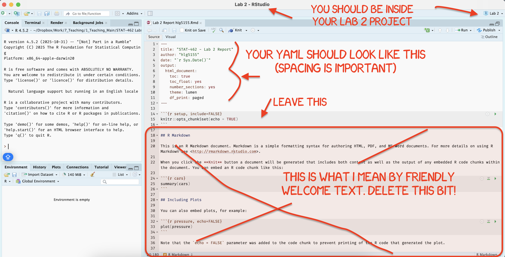
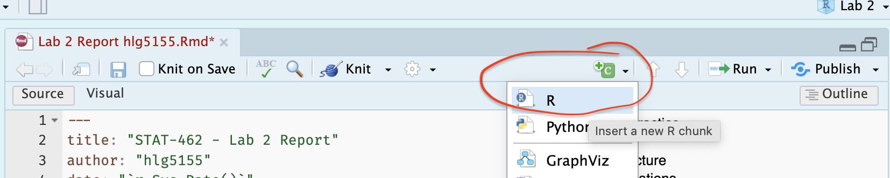
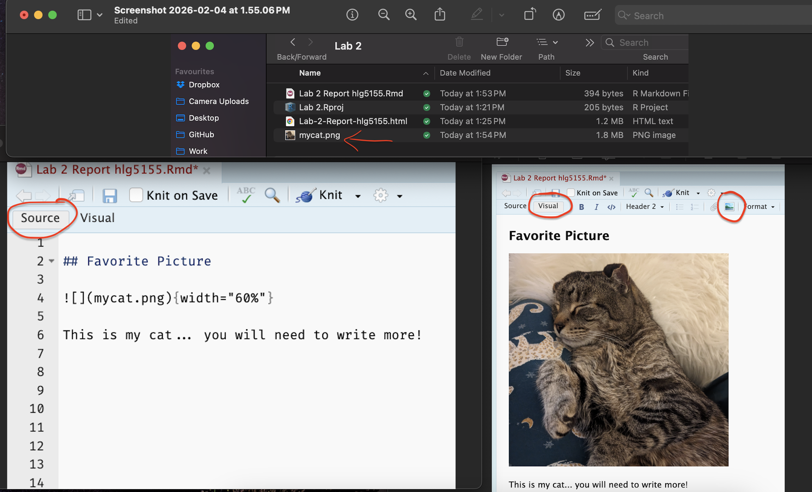
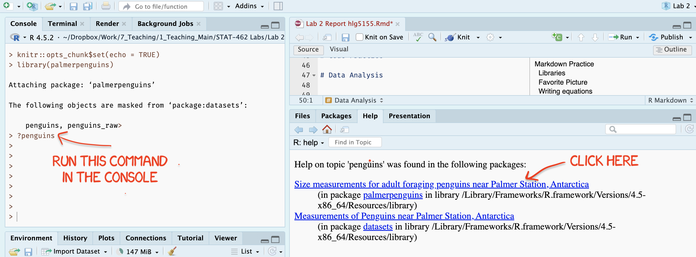
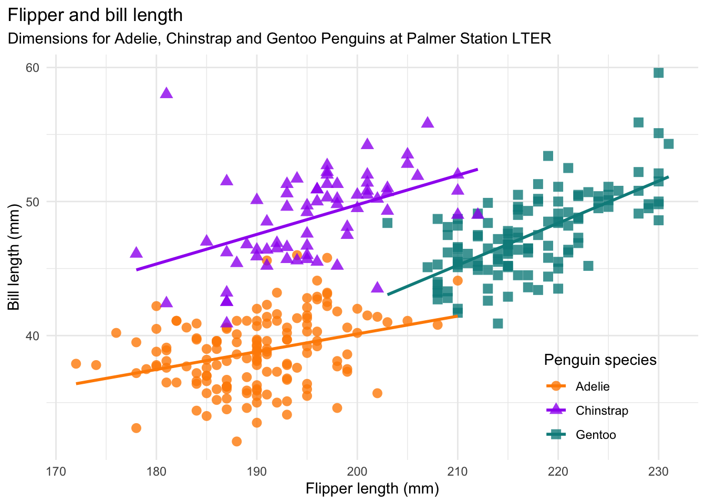
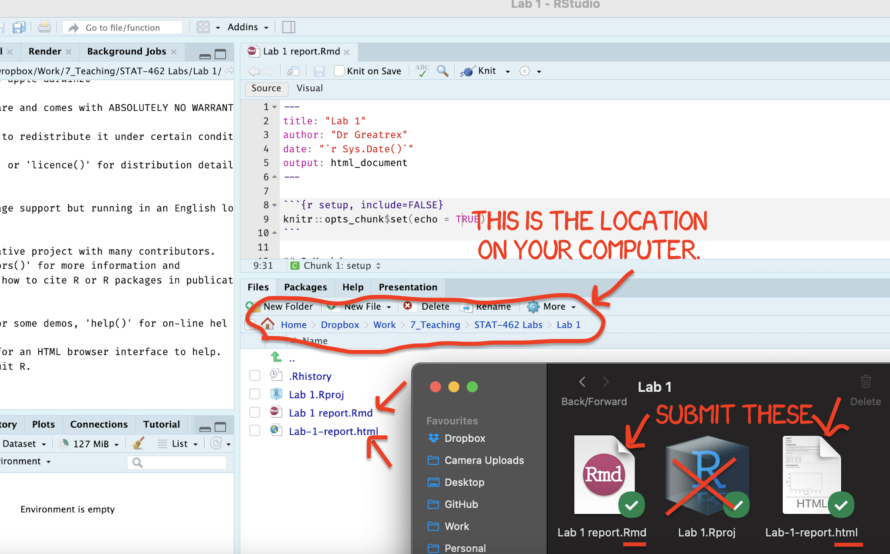

Lab 2
LAB AIM
Welcome to Lab 2. This is worth 8% (80 points) and you can drop your lowest lab out of six.
This is a ONE WEEK LAB. You only have one lab session (today) working on this during class, then until next Friday to finish up and write up. The maximum time it should take is about 4-5 hrs of your time.
The aim of this lab is to solidify your knowledge creating your lab reports, and to start thinking about regression topics.
LAB SET-UP (Important!)
STEP 1: IMPORTANT - Create a Lab 2 project..
You need a separate project for every lab!
[2A] Go here to read more about projects and to make a project for Lab 2: Projects
[2B] If you haven’t already, open your project in R-Studio. It should look like this, but say Lab 2 for everything.

Figure 0.9: How to check you are in a project
STEP 2: Download code-Packages from the app store..
Today we need a few new libraries/apps. Just like last week, select and install the ones you need from the “app store”
-
[3A] Follow the instructions here (Installing Packages) to go to the ‘install/app store’ and install these three packages:
rmdformatstidyverseggstatsplotpalmerpenguinstidyr
We will load and use them later in the lab.
STEP 3: Create your lab report structure
[4A] Using the tutorial instructions, make a new RMarkdown Report (Markdown Tutorial)
[4B] Open your RmD report file (click on its name in the files tab, as long as you are running your project). Click visual mode and see if you can identify the code chunks, space for text and yaml files.
[4C] Using the YAML tutorial, edit the YAML code to include, A title, your author name, automatically created today’s date, a floating table of contents, numbered sections (this won’t appear until you start typing section headings) and the lumen theme. (See the screenshot below)
[4D] Now you are going to delete all “the friendly welcome text” (leaving the code at the top), so you have space to write your answers. (see the screenshot below)

-
[4D] Now, lets set up your report structure.
-
Write the. following three level-1 chapter headings (bold), with the sub-headings as Level-2. Remember that to do this in
sourcemode, you need to use a single # for level 1 and a double ## for level 2. If you are invisualmode, type the headings, then click on that line, and click the little arrow next to Normal. *see screenshot below)-
Markdown Practice
Libraries
Favorite Picture
-
Data Analysis
- Data Description
- Data summary
- Remove missing data
- Scatterplot
- Initial Regression
-
-
[4F] Click knit. This should work, ask you to save (then click knit again) and create a html file in your lab 2 folder AND show you it on your screen. IF YOU HAVE PROBLEMS ASK FOR HELP
[4G] Close down the html file so that you are back in your lab report again.
1. MARKDOWN PRACTICE
In these questions, I want you to see how easy it is to insert things like images, to realise that you can just type text in the report without any special formatting and to learn that its always good to put your library loading code chunk at the top of your report.
Q1.1: Libraries & Packages
Up until now we have downloaded many libraries/packages from the app store. These are now on your computer but to USE them, we need to open the ones we want (just like you click on an app’s icon to open it before you can use it).
We do this using the “library” command. Because there are often many packages we need to load and they can easily break, it’s good practice to put ALL your library commands at the start of each report. We also want to make sure that they don’t destroy our report format when we knit.
- [A] Underneath your Libraries subheading, make a new code chunk. Leave lots of blank lines to give yourself space! R automatically tidies them up.

-
[A] Inside type the following case sensitive commands and run the code chunk by clicking the little green arrow on the top right of the code chunk. You should see a load of welcome text.
- If you see an error that says you don’t have the library, go to the app store and install it! (see the libraries tutorial)
[B] If you press the green arrow a second time, the welcome text should disappear.
[C] Now press knit. You should see that the library loading text makes your report messy. We are going to fix this using code chunk options.
-
[D] Look at the VERY TOP LINE of the code chunk. The one starting. ```{r .
- Click after the R and press comma (e.g. press , ). You should see a list of options appear.
- Add these two options, messages=FALSE and warnings=FALSE. e.g.
- Click after the R and press comma (e.g. press , ). You should see a list of options appear.

[E] Save and press knit again. Your report should look much neater.
[F] Now click in the white report space below the code chunk. In the text, write two or three sentences to explain what a code chunk option is and tell me about three more options that could be useful. Hint, the tutorial has the answers! Go to the RMarkdown tutorial and then section 3.7 (deliberately no link so you look around the tutorials!)
Q1.2: Adding photographs
-
[A] Find ANY image or photograph of your choice! Take a screenshot or download it. Make sure it is a .jpeg or a .png file format and rename the image to something sensible easy to type.
If you are on your laptop, put the image/photo file inside your Lab 2 project folder.
If you are using posit cloud, click on the File tab, then press “upload” and upload the photo into your project.
[B] Go back to R-studio and make sure you are in visual mode. Click on the little “add picture icon at the top” and insert your picture underneath the Favorite Picture heading.
[C] Underneath the picture in the white space, type at least 2 sentences to explain why you chose that image. You do not need any # in front of the text, just write.
Here are all the steps above, in both visual and source mode

- [D] Press knit and check it still works.
2. DATA ANALYSIS
We’re now going to build on this week’s lectures to understand more about penguins. The data we are using comes from the Palmer Penguins library we loaded earlier.
Important!
The data we are using comes from the Palmer Penguins library we loaded earlier. If you are coming back to the lab after closing R-Studio, RE-RUN THE LIBRARY CODE CHUNK, OR GO TO THE RUN BUTTON (top right) AND CLICK RUN ALL. Restarting R is like restarting your phone. You don’t need to redownload libraries from the app store, but you DO need to reopen them.
STEP 1
We want to load the data and take a look at it. First let’s look at the help file. There are actually TWO datasets called penguins, so we want to choose the one from palmer penguins
-
[A] First type
?penguinsinto the CONSOLE (not into a code chunk) and press enter. You will be given an option of two help files. Choose the one from palmer penguins and read about the dataset.

Figure 0.10: Type each line into the CONSOLE
[B] Now type
head(penguins)into the CONSOLE (not into a code chunk) and press enter. You will see the first 5 lines of the data. Good check to see if it loaded[C] Now type
View(penguins)into the CONSOLE (not into a code chunk) and press enter. It will open a new tab containing the data spreadsheet.
-
[Q3.1] Now go back to your report. Underneath “data description”, leave a few blank lines, then describe/list everything we need to know about this data to conduct our analysis. You are welcome and encouraged to use additional sub-headings, bullets or any other formatting to make this easier to grade.
- HINT/HELP, see the handout from Monday’s lecture (WEEK 4 - L4A Basic Regression Handout salary.pdf), or Homeworks 1 & 2 or the lecture slides.
- I am grading you against the specific list I gave in class, so don’t randomly ask chatgpt!
You are going to be conducting an analysis of whether the flipper length of a penguin impacts its mass.
-
[Q3.2] Below your text, make a new code chunk and inside, run the
names()command on the penguins data e.g. typenames(penguins)and run.- Underneath the code chunk, identify the response variable and the predictor variable. For each one, write
- The EXACT column name (case sensitive)
- What its referring to (including units) - remember the help file!
- Whether it’s the response or predictor variable.
- Underneath the code chunk, identify the response variable and the predictor variable. For each one, write
Now look at the summary of the data
-
[Q3.2] Under the Data summary heading, make a new code chunk and run the
summarycommand on the penguins dataset (just like you did for the names command). - Underneath, use the output to identify the following. Please use full sentences
- What the mean bill length is (remember units!)
- How many penguins are found on Dream island
- How many penguins have a missing body mass
At least at first, it’s useful to remove any missing values from our dataset, at least for the columns we care about
-
[Q3.3] We don’t want to use any object where our response or predictor are missing. So first, we want to remove missing values - and we save the result to a new spreadsheet called
penguins_clean. Thedrop_nacommand from thetidyrpackage makes this very easy as we can simply tell it which columns we care about- Underneath your remove missing data heading, make a new code chunk.
- Copy this code into it, then EDIT/FINISH the XXXXXXX part of the code to remove data for our response and predictor variable (hint, remember you typed the column names exactly above..)
- Run the code and look at your environment tab. You should see that there is now penguins and penguins_clean, and one has two less objects.
#THIS CODE NEEDS COMPLETING BEFORE IT WILL RUN!
penguins_clean <- drop_na(
data=penguins,
flipper_length_mm,
XXXXXXX
)Making a scatterplot!
- [Q3.4] Now.. we want to make a scatterplot to see the impact of flipper length on mass. Go to the GGplot2 scatterplot tutorial and use this to make a professional looking scatterplot with NO line of best fit. (by professional, you need good axis labels inc units, clear/easy to read etc).
Describe the scatterplot
- [Q3.5] Using this Khan academy tutorial as a guide, [CLICK HERE], in your report, describe the form, direction, strength and if there are unusual features in the data.
Create your first regression output
- [Q3.6] Now, you will create your first linear regression fit. Copy and run this line in the appropriate place in your lab report.
model1 <- lm(body_mass_g ~ flipper_length_mm, data=penguins)
model1- Underneath, interpret what the intercept and gradient mean in terms of penguins
Critique
- [Q3.7] If you look here, https://allisonhorst.github.io/palmerpenguins/ you can see that the owner of palmer penguins has made a more advanced scatterplot. In your report, critique your basic analysis in terms of understanding the relationship between flipper length and bodymass. How might this change your population or interpretation?

Bonus
This tutorial is also meant to link to the code to make the lovely plot above. https://allisonhorst.github.io/palmerpenguins/
If you work out how to recreate the plot exactly, I will award up to 5 bonus marks within the Lab total (e.g. max=80 points) - depending on how close you get.
(you are welcome to search for the exact code!)
Congrats! Finished
4. WHAT TO SUBMIT
If you are using your own laptop
Press knit one final time. You will have created two files; a .Rmd file containing your code and a .html file for viewing your finished document.
Find the html and RmD files in your Lab 1 folder on your computer. Double click the html file to open it in your browser and check it’s the one you want to submit.
You need to submit BOTH of these files on the relevant Canvas assignment page.
You can also add comments to your submission as needed on the canvas page, or you can message Dr G.

Figure 0.7: Find them in your STAT462 folder on your computer
If you are using Posit Cloud online
Press knit one final time. You will have created two files; a
.Rmdfile containing your code and a.htmlfile for viewing your finished document.Go to the files tab an click on the little check-box by the RmD file. Then click the blue “more button” and press export. Save onto your computer.

Figure 0.8: How do download the files from PositCloud
- Uncheck the .RmD box and click the box by the html file. Then click the blue “more button” and press export. Save onto your computer.
You need to submit BOTH of these files on the relevant Canvas assignment page.
You can also add comments to your submission as needed on the canvas page, or you can message Dr G.
CHECK YOUR GRADE!
RUBRIC
This is how you will be graded (percent)
HTML FILE SUBMISSION - 10 marks
RMD CODE SUBMISSION - 10 marks
-
MARKDOWN/CODE STYLE - 20 MARKS
How to get full marks for this:Your YAML code is working e.g. when you press knit, you see your author name, a table of contents etc etc (see step 4)
-
Your code and document is neat and easy to read. LOOK AT YOUR HTML FILE IN YOUR WEB-BROWSER BEFORE YOU SUBMIT. For example:
There is a spell check next to the save button.
You have written in full sentences and it is clear what question your answers are referring to.
You have included units!
You have included formatting like headings/subheadings and bullets. Many people make typos with the headings. The easiest way to do it is to use visual mode, then highlight the text and click Header 1, Header 2 etc.
WRITTEN QUESTIONS/R-MARKDOWN: 15 MARKS
You have answered the questionsclearly and thoughtfully in a way I could use as a class example.PENGUIN ANALYSIS: 25 MARKS
You included all the code and successfully answered the questions, providing reasoning where appropriate
[80 marks total]
Overall, here is what your lab should correspond to:
| POINTS | Approx grade | What it means |
|---|---|---|
| 98-100 | A* | Exceptional. Above and beyond. THIS IS HARD TO GET. |
| 93-98 | A | Everything asked for with high quality. Class example |
| 85-93 | B+/A- | Solid work but the odd mistake or missing answer in either the code or interpretation |
| 70-85 | B-/B | Starting to miss entire/questions sections, or multiple larger mistakes. Still a solid attempt. |
| 60-70 | C/C+ | It’s clear you tried and learned something. Just attending labs will get you this much as we can help you get to this stage |
| 40-60 | D | You submit a single word AND have reached out to Dr G or Aish for help before the deadline (make sure to comment you did this so we can check) |
| 30-40 | F | You submit a single word……. ANYTHING.. Think, that’s 30-40 marks towards your total…. |
| 0+ | F | Didn’t submit, or incredibly limited attempt. |